千葉大学 デザインコース コミュニケーションデザイン研究室
Chiba University, Design Course — Communication Design Lab.
これまでのプロジェクトの一覧です。
All projects of the lab.
該当するプロジェクトはありません。
No projects found.
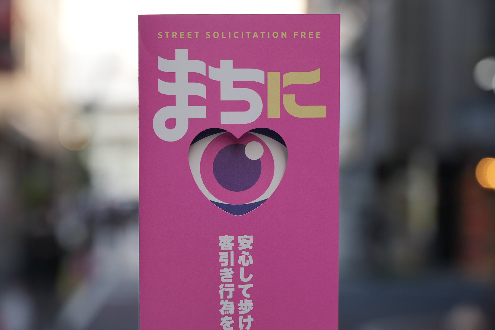
2026
まちにアイ
Machi ni Ai
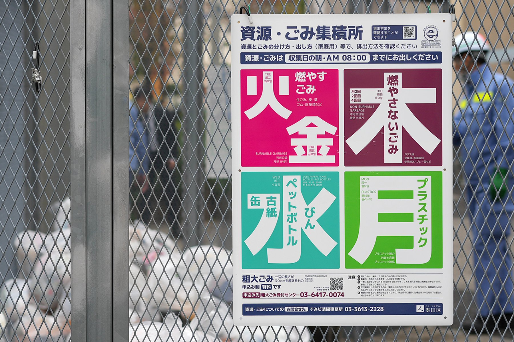
2026
資源・ごみ集積所サインシステム
Waste and Recycling Collection Point Signage System
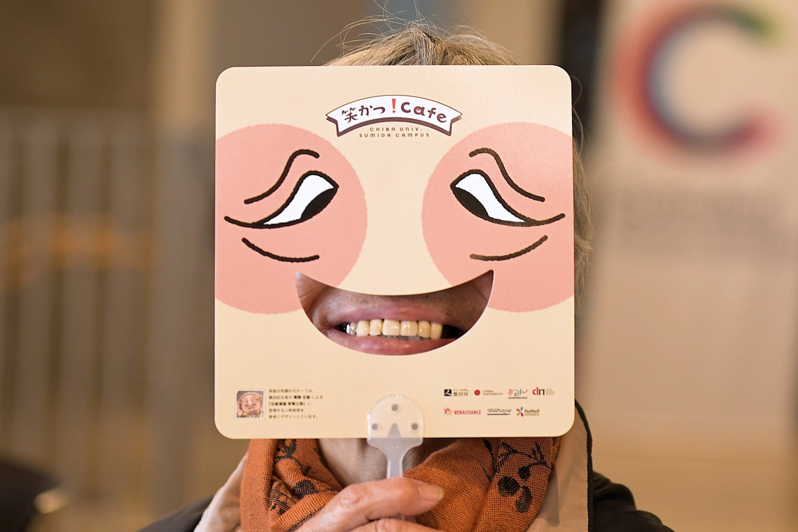
2025
笑かつ！Café
Warakatsu! Café
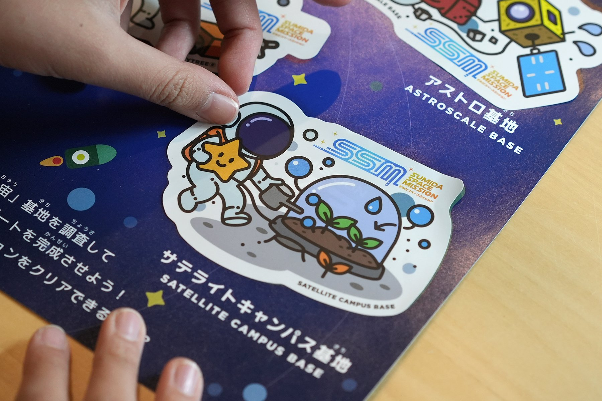
2025
すみだスペースミッション
Sumida Space Mission
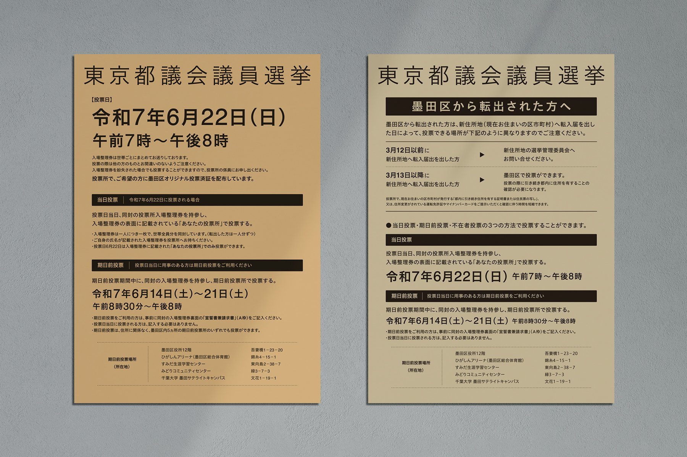
2025
投票案内の情報デザインシステム
Voting Information Design System
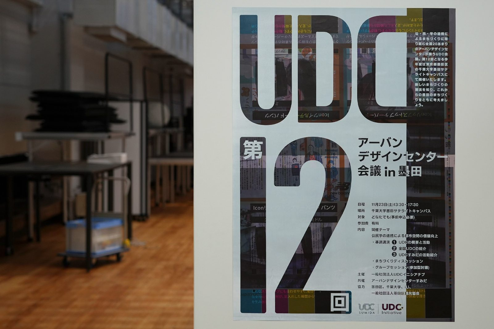
2024
第12回 アーバンデザインセンター会議 in 墨田
UDC Sumida Conference 2024
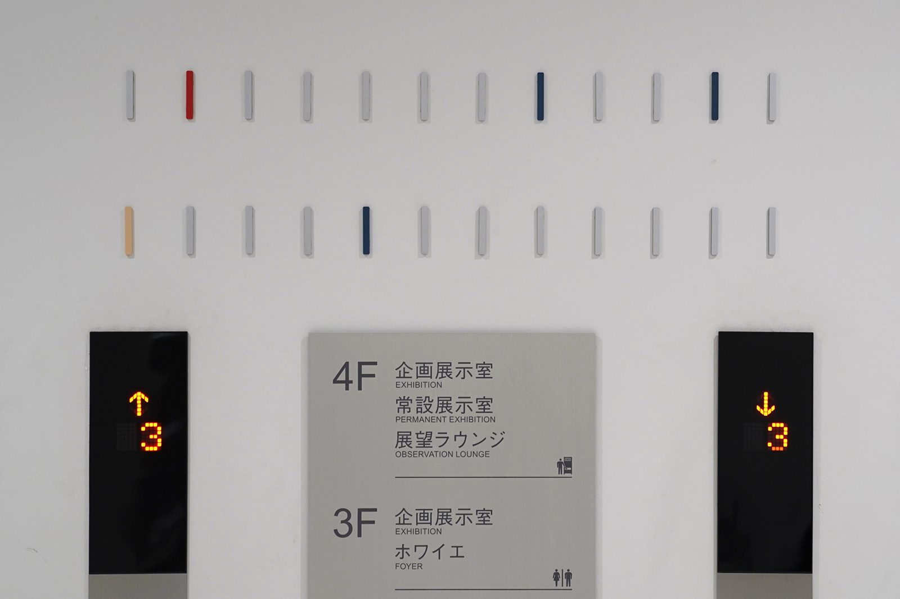
2024
すみだ北斎美術館 サインシステム
Sign System for The Sumida Hokusai Museum
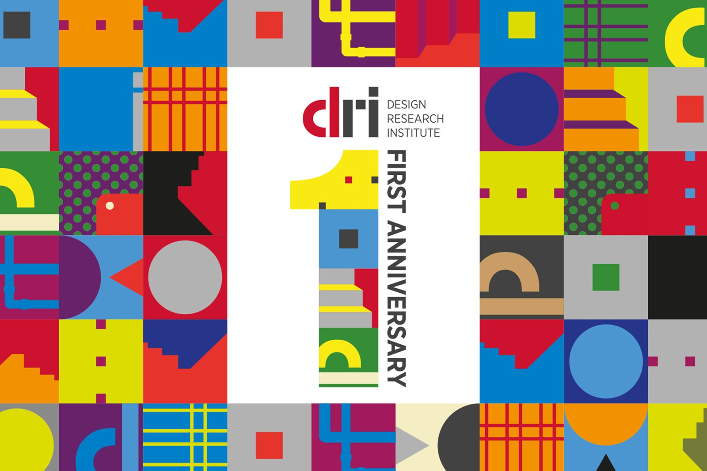
2022
dri 開設1周年記念 アイデンティティデザインシステム
Identity Design System for dri First Anniversary
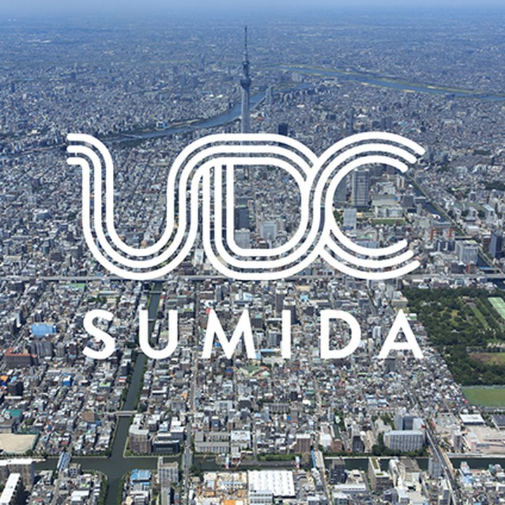
2021
アーバンデザインセンターすみだ アイデンティティシステム
Identity System for Urban Design Center of Sumida
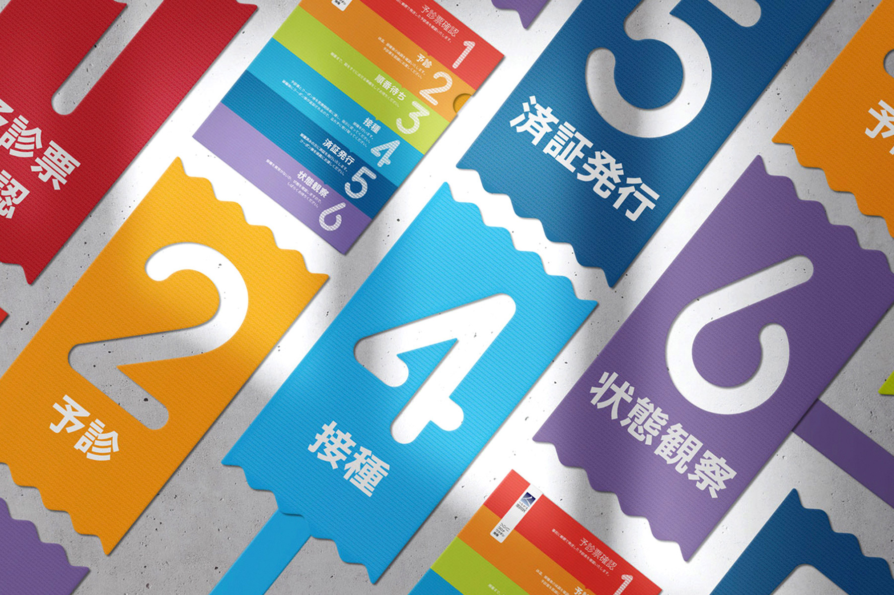
2021
サインシステム
Covid-19 Vaccination Wayfinding System
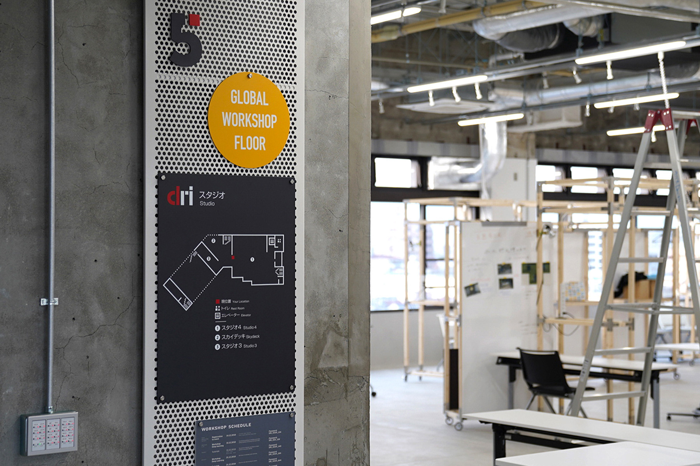
2021
デザイン・リサーチ・インスティテュート サインシステム
Signage System for DRI, Chiba University
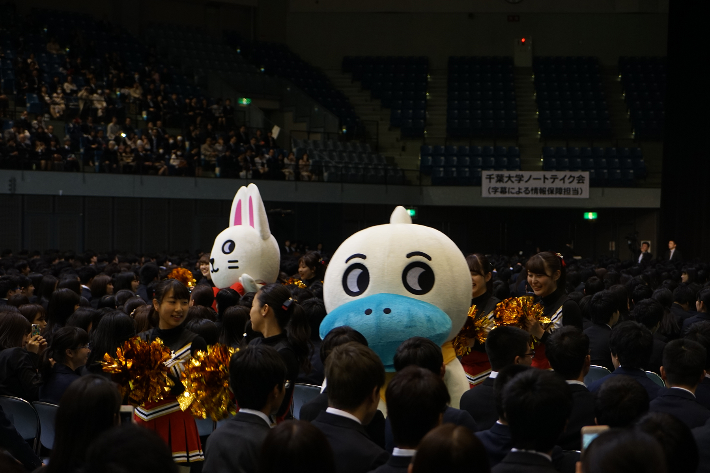
2019
千葉大学マスコット「CHIBATOMO」
“CHIBATOMO” Mascot for Chiba University
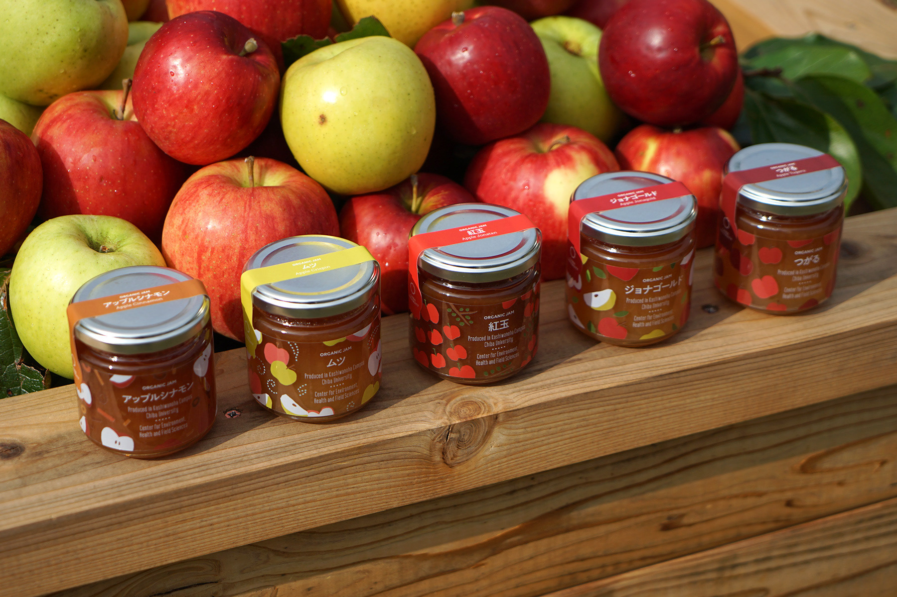
2019
柏の葉オーガニックジャム
Kashiwanoha Organic Jam Series
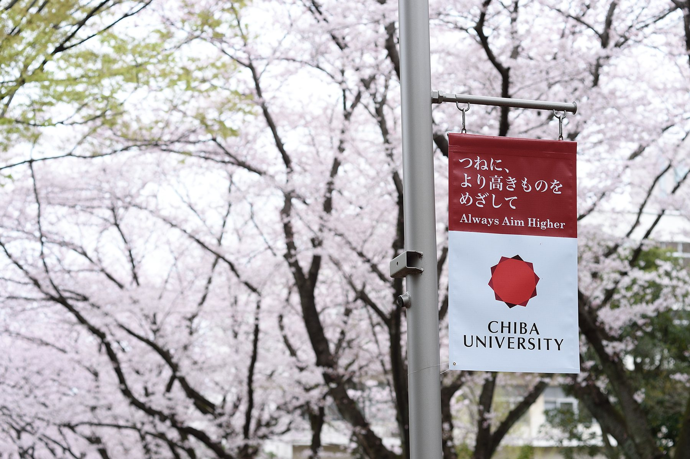
2016
千葉大学 コミュニケーションマーク
Communication Mark for Chiba University